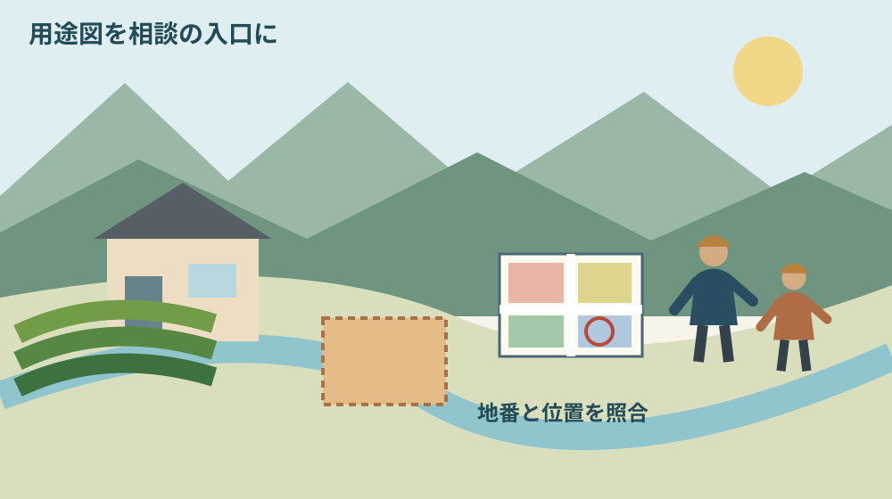
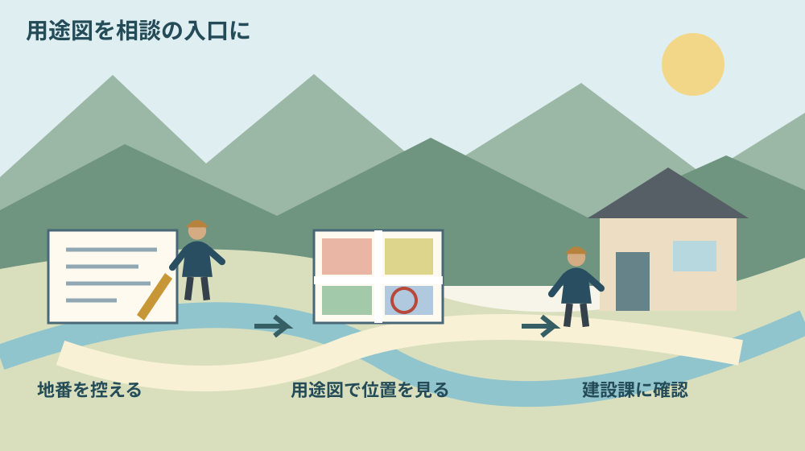

森町の用途地域の調べ方｜土地の日に確認
Q. 森町の土地に家を建てられるか、何から調べればいい？
森町公式の「都市計画図（用途図）」を開き、土地の地番と位置を照合します。図は概略なので、用途地域の詳細は建設課都市計画係0538-85-6322へ確認してください。用途地域だけで建築可否は確定しません。2026年10月1日の土地の日には、まず調べたい地番を一つ控えるところから始めます。
土地の日に、管理してきた土地の条件を一つ知る
土地を引き継ぐと、草刈りや近隣への連絡が先に来ます。活用を考える時間を取れず、税の通知だけが届く持ち主の方もいるはずです。森町で土地を守ってきた人の手間を抜きに、「空いているなら建てればいい」とは言えません。
大石浩之（磐田市／不動産業）です。私は、活用案を並べる前に、土地を特定できる資料を一つ持つ方が話が進むと考えます。売る、貸す、家族が使う。その結論は残したまま、用途地域を調べる入口を整理します。
国土交通省は2026年9月18日の発表で、10月1日を土地の日、10月1日〜31日を土地月間と案内しています。全国の講演会や相談会などを通じて土地への理解を深める機会です。森町で特定の催事が開かれるという案内ではありません。
この記事は2026年10月1日に公式情報を確認しました。土地の日を調べ始めるきっかけに使いますが、森町の用途地域がこの日に変更されたという意味ではありません。季節の話題と、個別の土地にかかる条件は分けて読んでください。
森町の用途地域を調べる公式入口
森町の「都市計画図（用途図）について」では、縮尺1万分の1の中遠広域都市計画図をPDFで閲覧できます。ページ更新日は2022年4月1日です。土地利用や建築計画に関する法規制を調べる参考資料として公開されています。
町は、用途図が都市計画の概略を示す図であることも明記しています。細かな内容は森町役場建設課に確認する案内です。画面上で色が読めたことと、その土地について正式な確認が済んだことを同じ扱いにしないでください。
窓口で紙の図を購入する場合、掲載価格は1枚1,300円です。PDFを見てから紙が必要か判断できます。今回の相談で図の購入が必須だとは書かれていません。まず位置を示せる状態をつくり、持参資料は窓口へ確認する順序で足ります。
もう一つの入口は、森町の「森町の都市計画について」です。2025年4月15日更新のページに、令和7年度版の抜粋資料が掲載されています。用途図だけで言葉が理解しにくいとき、町の都市計画の全体像を読む補助に使えます。
ここで意外に感じるのは、町が用途図を公開すると同時に、図だけでは詳細を決めないよう案内している点です。地図があるから窓口が不要になるのではありません。地図で質問する場所を絞れるから、窓口とのやり取りが具体的になります。
地番と位置をそろえてから図を見る
用途地域を調べる準備では、住んでいた家の呼び名より、対象の土地を示す地番を先に控えます。手元の登記資料や固定資産税の課税明細など、所在地番が分かる書類を探してください。書類名と年度も一緒に残すと後で照合できます。
住所の記憶だけで地図を開くと、隣の土地や、家の敷地と一緒に使っていた畑を取り違えるおそれがあります。家族が「あの家の土地」と呼ぶ範囲を、そのまま一筆だと決めないことです。図を読む前に、どの地番を調べるかを一つに絞ります。
手元の明細に複数の地番が載っている場合は、今回は一つだけ選びます。全財産を一度に整理しなくても構いません。ほかの土地が見つかったら別の行に書き足します。抜けを調べる段階は、名寄帳で親の土地を並べる記事で扱っています。
PDFでは、まず道路や川、公共施設など位置の手がかりを探し、対象のおおよその場所を見ます。次に凡例を読み、色や線が何を示しているかを確かめます。隣接する色だけを見て、目的の土地も同じ区域だと決めないでください。
縮尺1万分の1では、図上の1センチが実際の100メートルに相当します。ただし画面拡大や印刷倍率を変えると、手元で測った1センチの意味は変わります。この換算は図の粗さを理解する目安で、敷地の測量や境界確認に使うものではありません。
図の区域線に近い、地番の位置に自信がない、複数の区分に見える。その場合は結論欄を空けて、疑問をそのまま記録します。曖昧な線を指で拡大し続けるより、位置図を添えて町へ尋ねる方が、家族に誤った説明を残さずに済みます。

暮らしへの影響｜活用の前に相談の手戻りを減らす
用途地域の確認は、森町の土地をどのように使うか考える際の入口です。家を建てるつもりなのか、店舗を併設したいのか、既存の建物を使いたいのかで、窓口に伝える計画が変わります。まだ案の段階なら、そのまま案として伝えます。
「家が建ちますか」だけでは、場所と計画の両方が曖昧です。「森町のこの地番に、家族が住む住宅を考えている。用途地域と、次に確認する窓口を知りたい」と分けると、何を回答してほしいかが伝わります。建物の詳しい設計を先に作る必要はありません。
土地の維持費を減らしたいという相談でも、用途地域を確認しただけで、管理の手間がなくなるわけではありません。草刈りの予定や近隣の連絡先は、活用の検討と並行して残ります。今日の作業は、管理を続ける人が答えを探す範囲を狭くするための準備です。
町外の家族が窓口へ行くなら、地番の控えと位置図を同じ人が持てるようにします。現地を知る家族と、連絡を担当する家族が別の場合もあるからです。片方だけが状況を知る形では、電話をかけ直すたびに説明が最初へ戻ってしまいます。
良い点｜無料で読める図と確認先がそろっている
森町の用途図案内の良い点は、PDFへの入口、図の限界、問い合わせ先が一つのページにあることです。資料を見た後に誰へ聞けばよいかまで分かります。町外に住む所有者も、窓口を訪ねる前に質問の下書きをつくれます。
私は、図を公開する価値は、自分だけで答えを出せることより、家族と役場が同じ場所を見ながら話せることにあると考えます。電話で地名を繰り返すだけの相談から、位置を共有した相談へ進める。小さな差ですが、担当する人の時間を使い切らずに済みます。
紙の図の価格が明示されている点も、準備の助けになります。家族で大きな紙を囲んで見る方が分かりやすいなら購入を検討し、画面で足りるならPDFを使う。資料の入手方法まで含めて、自分たちが扱える形を選べます。
都市計画の紹介ページが別にあるため、用語の意味と個別の位置を行き来できます。用途図の細部だけを見ていると全体が見えなくなる場合もあります。最初は用途図、分からない語は紹介資料、具体の判断は建設課という役割を分けて使うと整理できます。
注文したい点｜用途地域の色だけでは建築可否は決まらない
用途地域は、建築や土地利用を考えるための条件の一つです。図の色が住宅に関係する区分に見えても、その一事で建てられると決められません。町が概略図としている以上、区域の詳細と、計画に必要な別の確認を窓口で切り分けます。
道路との関係、土地の現況、農地として扱われるか、境界が分かるかなどは、別の資料や確認先が必要になる場合があります。この記事は各条件の適否を判定するものではありません。用途地域の照会と一緒に「次にどこへ聞くか」を尋ねる使い方を勧めます。
畑を宅地や駐車場にしたい場合、用途地域の確認で農地に関する手続きまで済んだとは扱えません。土を入れるなどの作業を先行させず、農地転用を相談する前の整理も参照し、担当窓口へ計画を示してください。
私は、公開図に最新の更新箇所や照会方法が見つけやすくまとまっていると、所有者はさらに使いやすいと感じます。ただし、ページの更新日が古いことだけを理由に図が無効とは断定しません。今回確認できたのは掲載内容であり、土地ごとの変更履歴ではありません。
相談先は建設課都市計画係、電話0538-85-6322です。電話で即答できるか、資料の送付が必要か、来庁が必要かは相談内容によります。回答までの日数をこの記事で約束せず、連絡したときに必要な手順を確認してください。
対案・結論｜今日は地番を一つ控える
土地の日の最初の行動は、調べたい土地の地番を一つ書くことです。書類を全部そろえる、家族会議で活用方針を決める、と課題を広げません。地番の横に「住宅を考えている」「使い道は未定」など、今の状態を短く添えれば相談の下書きになります。
次に町の用途図を開き、位置が特定できたかを記します。分からないときは「位置未確認」で止めて構いません。似た地名や近くの家の位置で代用しないでください。窓口に見せるためのメモなので、未確認欄が残ること自体は失敗ではありません。
連絡する段階では、地番、位置図、考えている使い道、聞きたいことの四つを手元に置きます。役場から追加資料を求められたら、その資料名を正確に控えます。家族の誰が探せるかまで決めると、照会が途中で止まりにくくなります。
電話の説明例は「用途図を見ましたが、区域の線に近く判断できません。この地番の用途地域と、住宅計画で次に確認する窓口を教えてください」です。これは質問の例で、町の指定様式ではありません。実際の場所と目的に合わせて言い換えてください。

家族に残す記録｜見た図と聞いた回答を分ける
土地の記録には、資料から読み取った内容と、窓口で確認した回答を別欄にします。「図ではこの区分に見える」は見立てであり、「担当窓口に確認した内容」とは確かさが違います。家族へ渡すときに、その違いが消えない書き方にします。
残す項目は、地番、書類の名称、資料の年度、用途図のURL、閲覧日、照会日、確認先、回答の範囲です。窓口で聞いた結論だけでなく、どの計画を前提にした回答なのかも控えます。住宅の相談結果を、そのまま店舗の計画へ転用しないためです。
相続した土地なら、名義の確認と家族の希望も別の欄に置きます。用途地域の照会をした人が、土地の処分を決める人とは限りません。名義や相続の個別判断は専門家へ相談し、問い合わせの準備と契約判断を混ぜないようにします。
将来売る可能性がある場合も、今すぐ査定額を出す必要はありません。家を売る前に整理することとつなげて、資料の置き場所を決めておく方法があります。売却を見送る場合にも、次に調べる家族が同じ作業を繰り返さずに済みます。
大石の視点｜地図を見ることと、使い道を決めることは別
私は、用途地域を調べた日に活用方針まで決めなくてよいと考えます。土地を維持してきた人には、家族の事情も費用の心配もあります。調べることを決断の催促にしてしまうと、資料を開くこと自体が重くなります。今日は材料が一つ増えれば十分です。
私なら、土地の書類を机に広げた場面で、最初に一つの地番へ印を付けます。これは相談の実話ではなく、私が勧める手順です。全筆の活用案を並べる前に、その一筆について「分かること」「聞くこと」を分ける方が、家族の会話を始めやすいと考えます。
正直に言えば、用途図をどこまで家族で読み込むべきか、私にも迷いがあります。理解する時間は必要ですが、細かな区域線の判断まで背負う必要はない。その境目を町自身が「概略」と示しているので、私は分からない箇所を質問に変える方を選びます。
担い手や後継の問題を、所有者の勉強不足に置き換えるつもりはありません。土地の管理を一人に寄せたままでは、調べる時間もつくれません。地番を控える役を町外の家族が引き受けるだけでも、現地で草を刈る人の負担を少し分けられます。
まとめ｜用途図を相談の出発点にする
森町の用途地域は、町の用途図で位置と凡例を見て、詳細を建設課に確認する順序で調べます。PDFがあること、図が概略であること、窓口が示されていることを一組で覚えてください。図だけを切り取って建築可能という結論にしないことです。
2026年10月1日の土地の日にできるのは、地番を一つ控えることです。建てるか、貸すか、売るかはその後で構いません。管理してきた土地を家族が同じ資料で見られる状態へ進める。それを今日の成果にするのが、私の提案です。
よくある質問
森町の用途地域を調べるときは、資料の入手、区域の照会、建築可否の判断を分けると質問が整理できます。
用途地域図は無料で見られますか？
森町の「都市計画図（用途図）について」から、縮尺1万分の1の図をPDFで閲覧できます。窓口販売の紙の図は掲載価格1枚1,300円です。紙の購入が相談の必須条件とは記載されていません。図は概略なので、詳細は建設課都市計画係0538-85-6322へ確認してください。
地図で住宅の区域に見えれば家を建てられますか？
用途地域の色だけでは建築可否を確定できません。町は用途図を概略の参考資料としています。対象地番と位置図、予定する建物の用途をそろえて建設課へ照会してください。道路、農地など別の確認が必要な場合もあるため、次に確認する窓口を聞き、設計や工事の判断は専門家へ相談します。
使い道が決まっていない土地でも調べられますか？
使い道が未定でも、地番と位置を整理し、用途地域を調べる準備はできます。窓口には計画未定と伝え、区域の詳細や確認資料を尋ねてください。今回の照会だけで売却や建築を決める必要はありません。確認日と回答の範囲を残しておけば、家族が別の案を考える際にも調べた材料を共有できます。
具体的な事業用地を検討する場合は、中川下工業用地の造成予定と設備条件も読み、区域の確認と使い始める時期を分けて相談します。
実家や土地の資料を家族で整理する場合は、実家カルテも利用できます。売却未定でも使える本サイト運営会社の民間サービスです。森町や各団体の公式手続ではなく、利用は任意です。
公式情報源
2026年10月1日確認（2026年10月確認）。制度・数値・営業や受付状況は変わる場合があります。行動前に公式情報を再確認し、個別の建築・契約・雇用・山林管理などの判断は担当窓口や専門家に相談してください。